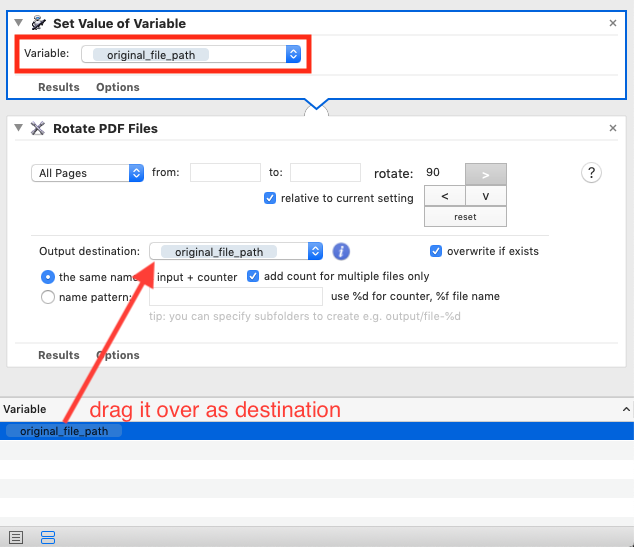
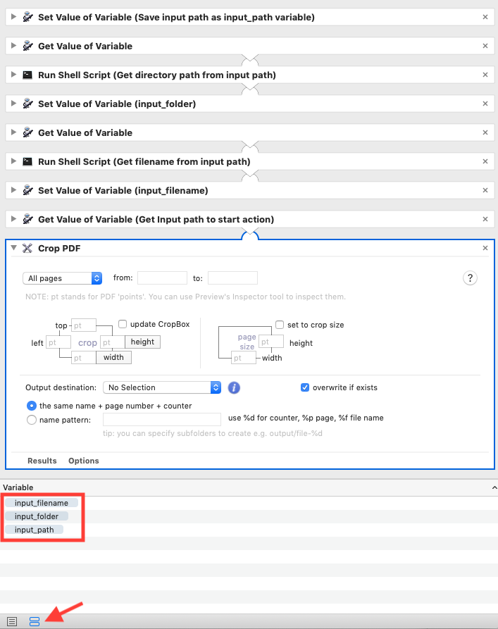

Working With Variables
Remember Original File Path
A workflow step will not modify the original file by default. This is done on purpose so that you do not destroy your PDF file by mistake. However, it does make sense to overwrite the original in some cases, like when you rotate PDFs. The solution is to set the original file path as a variable and then use it as destinatination in your subsequent steps.

Move Variables
Sometimes original input path is not enough. You may want to work with folder and file name separately. VipRiser PDF Ops can help you to populate these variables in order to get started.
